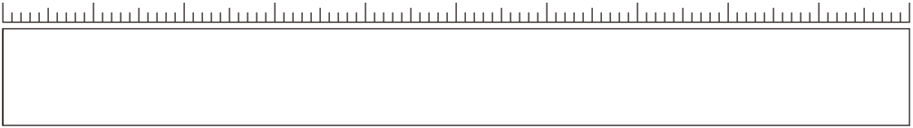
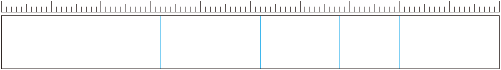
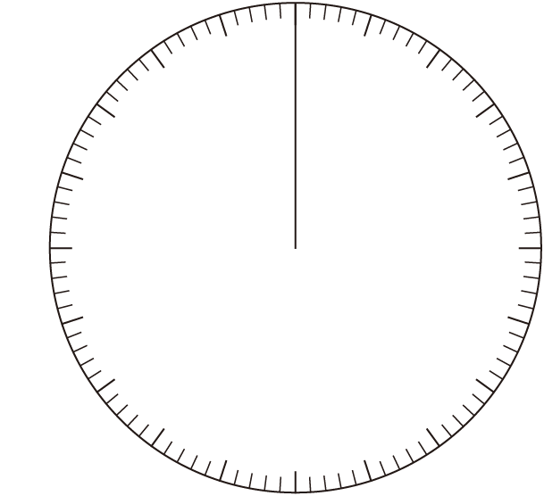
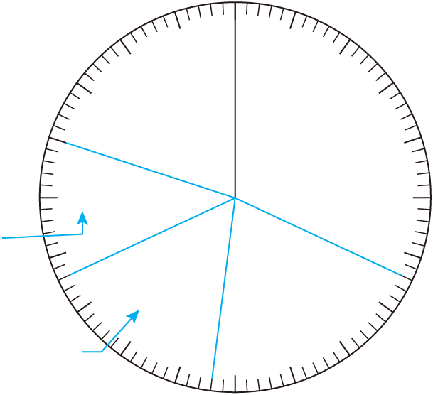
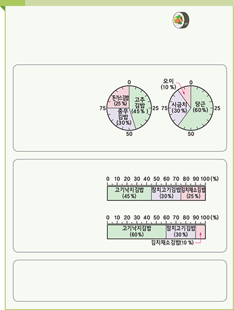

- 물음 1
- 물음 2
- 물음 3
- 물음 4
- 물음 5
-
할 일에 따라 자료를 조사한 자료를 어떤 그래프로 나타내면 좋을지 이야기해 보세요.
예원그래프
-
그래프로 나타내어 보세요.
-
예
운동별 좋아하는 학생 수
0102030405060708090100(%)축구
(32%)농구
(20%)배드민턴
(16%)피구
(12%)기타
(20%) -
예
운동별 좋아하는 학생 수
0255075축구
(32%)농구
(20%)배드민턴
(16%)피구
(12%)기타
(20%)
-
-
그래프를 보고 어떠한 결론을 내릴 수 있는지 이야기해 보세요.
통계 활용 포스터의
그래프를 보고 해석하여
결론을 이야기해 보세요. -
그래프를 보고 어떠한 결론을 내릴 수 있는지 이야기해 보세요.
통계로 찾은 친구들의 김밥 맛김밥이 잘 팔리는 요즘! 싫어하는 김밥을 알아보고 모든 학생들이
만족하는 김밥을 만들어 보자!조사 －싫어하는 김밥조사 대상: 초등학생
조사 방법: 싫어하는 김밥과 싫어하는 김밥 재료를 각각 설문지를 통하여 조사하였다.
싫어하는 김밥싫어하는 재료실험 －김밥 시식회실험 대상: 초등학생 조사를 통하여 학생들이 좋아하는 재료들로 김밥을 만들어 시식회를 하였습니다.
남학생여학생<결론> 학생들이 싫어하는 재료를 빼고 좋아하는 재료를 넣으니
만족도가 높아졌다. 통계의 필요성을 알게 되었다. -
활동 후에 느낀 점을 이야기해 보세요.
예친구들과 함께 만드니 더 효과적으로 만들 수 있었습니다.